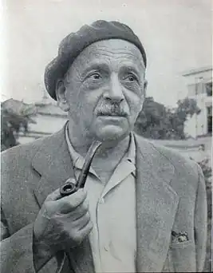

З початком революції служив у жилотделе Моссовета заради збереження Студії, яка незабаром перетворилася на Театр Народу біля Кам'яного мосту. У 1918 мандрував з бригадою акторів по фронтових дорогах Західного фронту, потім служив у різних московських театрах.
Антокольський Павло Григорович (1896 — 1978), поет, перекладач. Народився 19 червня (1 липня н. с.) в Петербурзі в родині адвоката. Головним захопленням дитинства було малювання аквареллю і кольоровими олівцями. В 1904 році сім'я переїхала до Москви, де незабаром майбутній поет вступив в приватну гімназію. У старших класах почалося його захоплення поезією, театром, декламацією. Він вів до того ж рукописний журнал. Закінчивши гімназію в 1914 році, через рік він поступив на юридичний факультет Московського університету, але йому не судилося було стати юристом. Його долю вирішили заняття у Студентської драматичної студії, якою керував Е. Вахтангов. Він став актором, потім — до середини 1930-х — режисером у Театрі ім. Е. Вахтангова.
З початком революції служив у жилотделе Моссовета заради збереження Студії, яка незабаром перетворилася на Театр Народу біля Кам'яного мосту. У 1918 мандрував з бригадою акторів по фронтових дорогах Західного фронту, потім служив у різних московських театрах. У 1920 став відвідувати "Кафе поетів" на Тверській, де зустрівся з В. Брюсовим, якому сподобалися вірші Антокольського, і він надрукував їх в альманасі "Художнє слово" (1921). Перша книжка "Поезії" була видана в 1922. Протягом 1920 — 30 опублікував кілька поетичних збірок: "3апад"(1926), "Дійові особи" (1932), "Великі відстані" (1936), "Пушкінський рік" (1938) та ін У роки Вітчизняної війни Антокольський був кореспондентом фронтових газет, керував трупою фронтового театру. У 1943 р. була створена поема "Син", присвячена пам'яті сина, загиблого на фронті.Творчість П. Антокольського найбільш повно представлено в книгах: "Майстерня" (1958), "Висока напруга" (1962), "Четвертий вимір" (1964), "Час" (1973), "Кінець століття" (1977) та ін. Антокольський належить кілька книг, статей і спогадів: "Поети і час" (1957), "Шляхи поетів" (1965), "Казки часу" (1971). Антокольський відомий і як блискучий перекладач французької поезії, а також поетів Грузії, Азербайджану, Вірменії та ін. Прожив довге життя, П. Антокольський помер в 1978 в Москві.